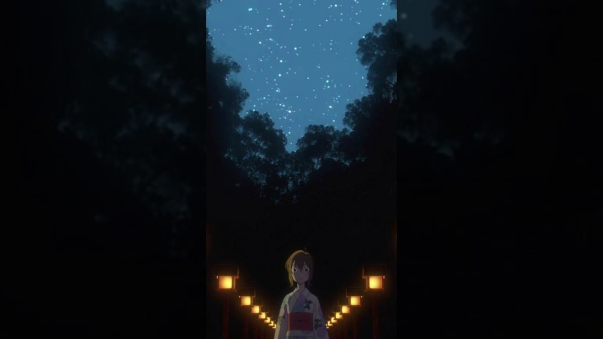

Now Loading...

ただ君に晴れ
2020年10月、ストリーミングサービスでの累計再生回数が1億回を突破。ヨルシカにとって初のストリーミング1億回再生超え楽曲となった曲(現在は2億再生以上)。
この楽曲は2018年5月9日にU＆R recordsより発売された2ndミニアルバム「負け犬にアンコールはいらない」に収録されている。
この曲のMV撮影時に使用された富山県高岡市の雨晴（あまはらし）海岸は聖地として知られている。
花に亡霊
「スタジオコロリド」が贈る長編アニメーション映画第2弾『泣きたい私は猫をかぶる』の主題歌。映画の世界観を音楽で表現しており、笹木美代（ムゲ）の日之出へのまっすぐな想いをより一層引き立てるものとなっている。
MVではヨルシカのMVでおなじみ、「ぽぷりか氏」がディレクターを務め、映画本編のシーンだけでなく、初公開のシーンも用いられている。
楽曲についてコンポーザーのn-bunaは、「純粋に、きれいなメロディ、きれいな情景を並べた歌を作ろうと思ってできた曲」であり、自身の好きな"夏の匂いがする"という言葉を歌詞に入れたとコメントしている。
雲と幽霊
「雲と幽霊」は昨年リリースされた1stアルバム『夏草が邪魔をする』に収録されており、バンド名の由来となった歌詞が含まれた楽曲。
幽霊となった少年が世界を旅して目的地を目指す内容で、大人しく、落ち着く曲調になっている。
夜明けと蛍
n-bunaを語るうえでは外せない曲。
n-bunaが19歳の時に2014年11月にニコニコ動画に投稿された楽曲。